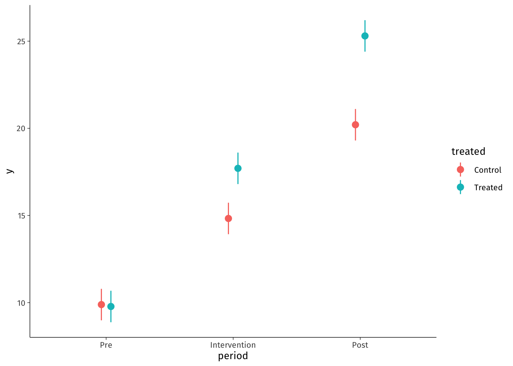

![]()
| Period | Treatment | Mean | SD |
|---|---|---|---|
| Pre | Control | 9.9 | 8.1 |
| Pre | Treated | 9.8 | 6.9 |
| Intervention | Control | 14.8 | 6.9 |
| Intervention | Treated | 17.7 | 7.4 |
| Post | Control | 20.2 | 7 |
| Post | Treated | 25.3 | 7.3 |
New Paper
Abstract
Why did we start? Because chocolate. What did we do? Ate chocolate. What did we find? It’s delicious. What does it all matter? It’s obvious!
Keywords
heterogeneity, uncertainty, variation, multilevel model, statistics, visualization
Background
Let’s face it. Chocolate is delicious, and it seems impossible that it might not be good for you. However, the science is unclear, at least for some outcomes.(1)
Methods
We recruited students who thought they were coming for training in reproducible research methods as a pre-text for eating chocolate in the morning. We measured their happiness using our established, validated index.
We calculated some descriptive statistics and ran a simple linear regression model, shown in Equation 1:
\[ y_{it}=\beta_{0} + \beta_{1}*Treated + \beta_{2}*Period + \epsilon_{it} \tag{1}\]
We also explored a model with a product term, but not because p>0.05 in the previous model. Honest.
Results
Descriptive statistics are shown in Table 1
Estimates from the regression analysis are shown in Table 2. Regression results clearly show that chocolate increases happiness. We can see that the overall happiness index for the chocolate group was 4.67 units higher in the post period relative to the change over the same period in the control group [95% CI: 3.66, 5.68].
| (1) | (2) | |
|---|---|---|
| (Intercept) | 8.523 | 9.888 |
| (0.380) | (0.461) | |
| treatedTreated | 2.620 | -0.110 |
| (0.380) | (0.652) | |
| periodIntervention | 6.433 | 4.940 |
| (0.466) | (0.652) | |
| periodPost | 12.919 | 10.317 |
| (0.466) | (0.652) | |
| treatedTreated × periodIntervention | 2.986 | |
| (0.922) | ||
| treatedTreated × periodPost | 5.205 | |
| (0.922) | ||
| Num.Obs. | 1500 | 1500 |
| R2 | 0.353 | 0.367 |
| R2 Adj. | 0.352 | 0.365 |
| AIC | 10251.4 | 10223.5 |
| BIC | 10277.9 | 10260.7 |
| Log.Lik. | -5120.692 | -5104.743 |
| RMSE | 7.35 | 7.27 |
Regression results clearly show that chocolate increases happiness, but if you aren’t convinced please see Figure 1.

Discussion
We think this is convincing. But it may not matter for policy since another randomized trial showed that many participants switched groups mid-study because of their personal chocolate preferences.(2)
References
1.
Chan K. A clinical trial gone awry: The Chocolate Happiness Undergoing More Pleasantness (CHUMP) study. Canadian Medical Association Journal [Internet]. 2007 Dec 4 [cited 2024 Nov 8];177(12):1539–41. Available from: http://www.cmaj.ca/cgi/doi/10.1503/cmaj.071161
2.
Scaramuzza AE, Zuccotti GV. Dark chocolate consumption and lower HbA1c in children with diabetes: Direct cause or pure happiness? Clinical Nutrition [Internet]. 2015 Apr [cited 2024 Nov 8];34(2):333–4. Available from: https://linkinghub.elsevier.com/retrieve/pii/S0261561415000138